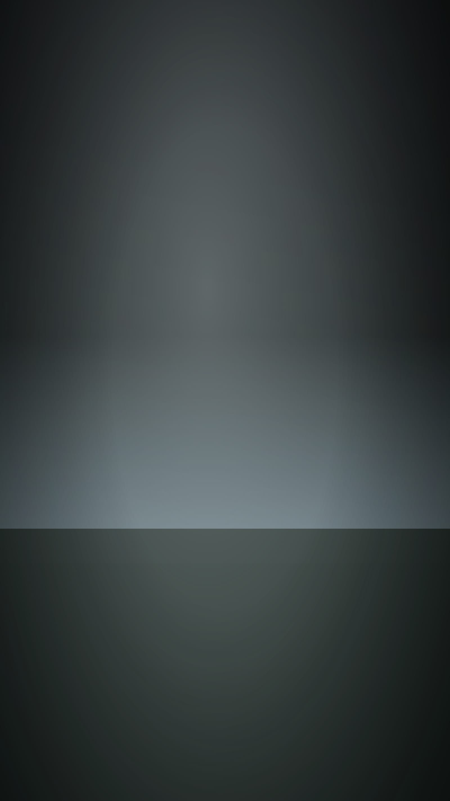

Работы6 проекта
Каждая работа — в своём формате
Сетка не приводит всё к 16:9: вертикаль остаётся вертикалью, а широкий кадр — широким. Формат здесь содержание, а не оформление.


В этом направлении работ пока нет. Посмотрите остальные или напишите нам.
Контакт
Расскажите, что нужно снять
Ответим в течение рабочего дня. Если проект срочный — пишите в Telegram, там быстрее.